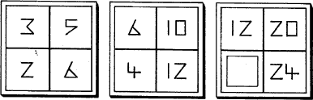

220
The panel glides shut behind you and keeps you hidden from the enemy. Through the wall you hear cries of surprise and some curses when they enter the chamber to discover that you have seemingly disappeared into thin air. Mindful that they might find your hiding place, you descend the stairs and arrive at a vault which is lavishly equipped with all manner of elaborate laboratory apparatus. Several large tables line one wall, many stained with blood.
You sense that Banedon is disturbed by the sight of these tables and, when you ask him what is wrong, he tells you that this chamber is where the Nadziranim subjected him to hours of brutal interrogation in a futile attempt to extract the magical secrets of the Brotherhood.
Despite all their fiendish tortures, he says, his mind-voice weak yet full of pride, they learned nothing.
You search for a way out of this vault and soon discover a steel door which is secured by a curious combination lock. It comprises three raised blocks, each block divided into four equal squares. In each square, bar one, there is a number. You ask Banedon if he knows how the lock operates and he recalls once seeing a Nadziran tapping the empty square several times in order to make the door open.
Consider the following grids of numbers. When you think you know what the missing number is, turn to the entry that bears the same number as your answer. 12
{kind=link}

If your answer is incorrect, or if you cannot solve the puzzle, turn to 154.
Footnotes
[12] The section corresponding to the correct answer will have a footnote confirming that it is indeed correct.